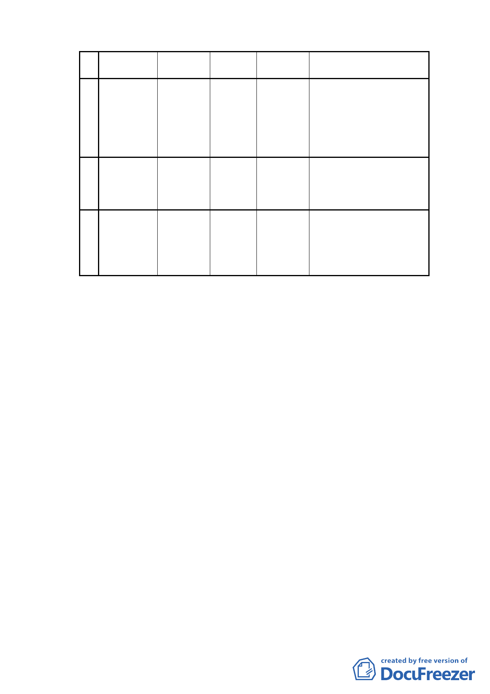

（一）變更土地使用分區：
編
號
變
更
位
置
原計
內
畫 變更計畫
容內 容
變更面積 變
更
理
由
1
臺北市中正
區南海段五
小段 56-1、
57-1 及
道路用地
462-2 地 號
等 3 筆土地
公園用地
計畫道路預定地位於植物
478 平 方
公尺
園現況範圍內，屬園區不可
分割之部分，爰將道路用地
變更為公園用地，以維持本
市植物園之完整。
臺北市中正
本地號原係重慶南路二段 6
2
區南海段五
小段 54-1 地
道路用地
第三種住 6 平 方 公 巷與計畫區西側未開闢計
宅區
尺
畫道路之道路截角，配合變
號土地
更事項 1，已無留設需求。
3
臺北市中正
區南海段五
小段 55-1 地
號土地
道路用地
本地號原係計畫區南側未
第三種住
宅區
5 平方公
尺
開闢計畫道路與計畫區西
側未開闢計畫道路之道路
截角，配合變更事項 1，已
無留設需求。
（二）土地使用分區管制：
1.為維護區域公共安全留設消防通道，並考量原計畫道路用
地東側住宅區之發展權益，本變更範圍南側之未開闢道路
用地（南海段五小段 59、60-4 地號等 2 筆土地）應配合
北側住宅區（南海段五小段 47-2、51-3、54、55 地號等 4
筆土地）開發時程一併完成開闢，並得依「都市計畫容積
移轉實施辦法」將容積移入北側住宅區基地。
2.除本計畫書圖之規定外，應依「臺北市土地使用分區管制
規則」之規定辦理。
（三）事業暨財務計畫：
1.本計畫區內 56-1、57-1 及 462-2 地號等 3 筆土地權屬為中
華民國，由行政院農業委員會林業試驗所管有，變更後續
由該所負責維護管理。
2.計畫區南側 8 公尺計畫道路部分（南海段五小段 59、60-4
地號等 2 筆土地）應配合住宅區基地開發時程，由土地所
有權人自願興闢並捐贈予臺北市。
（四）其他：
-6-